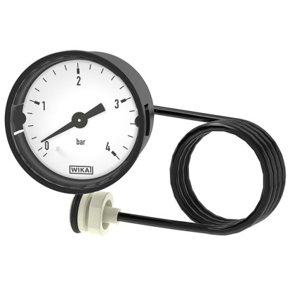
WIKA Model 101.00
Bourdon tube pressure gauge, copper alloy
Đồng hồ, cảm biến, công tắc và màng đo áp suất WIKA chính hãng Đức cho nhà máy, EPC và dầu khí.
Chọn model để xem thông số, ứng dụng, datasheet và gửi yêu cầu báo giá WIKA chính hãng.

Bourdon tube pressure gauge, copper alloy

Bourdon tube pressure gauge, copper alloy
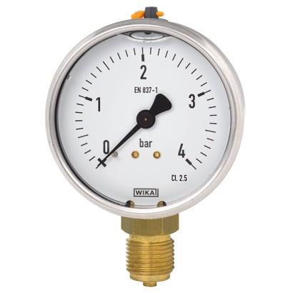
Bourdon tube pressure gauge, copper alloy
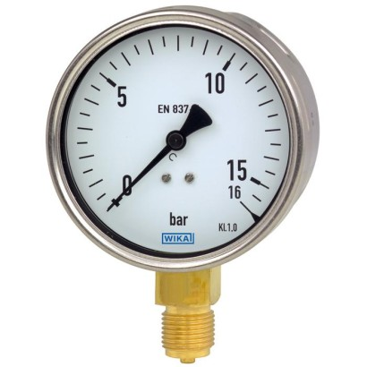
Bourdon tube pressure gauge
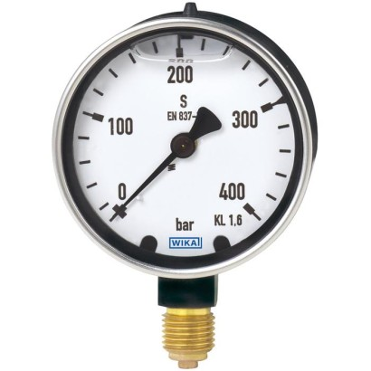
Bourdon tube pressure gauge, copper alloy

Liquid filled gauge

Test gauge, copper alloy
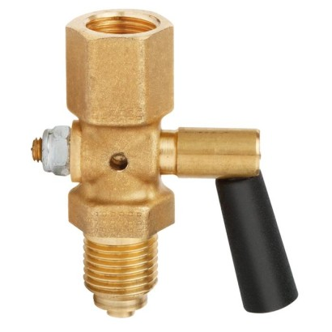
Stopcock for pressure measuring instruments
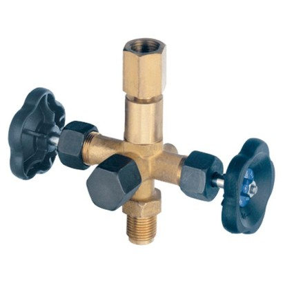
Pressure gauge valve
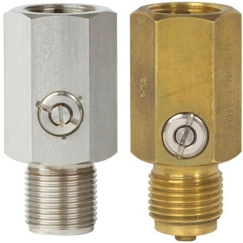
Pressure gauge snubber
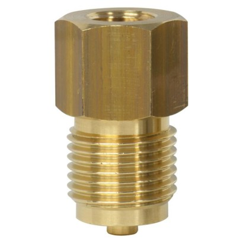
Gauge adapter
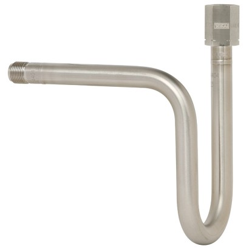
Syphons and connecting pipes
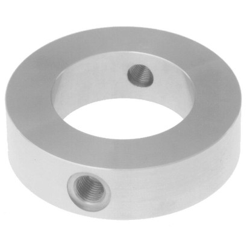
Flushing ring
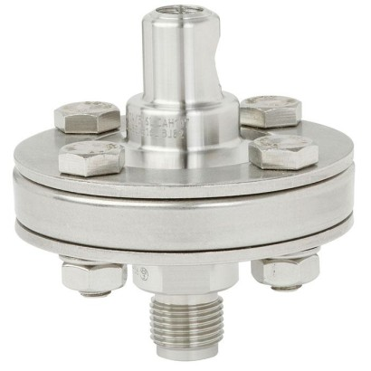
Diaphragm seal with threaded connection
Diaphragm seals
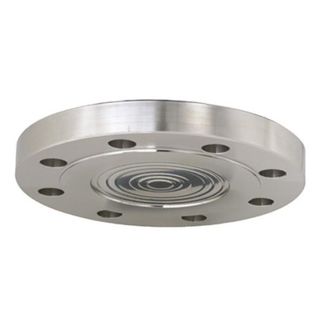
Diaphragm seal with flange connection
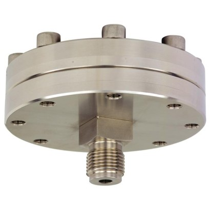
Diaphragm seal with threaded connection
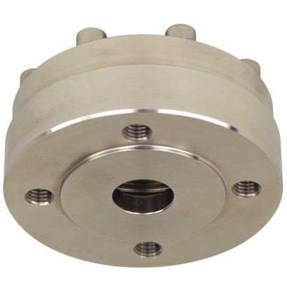
Diaphragm seal with flange connection

Pressure sensor A-10
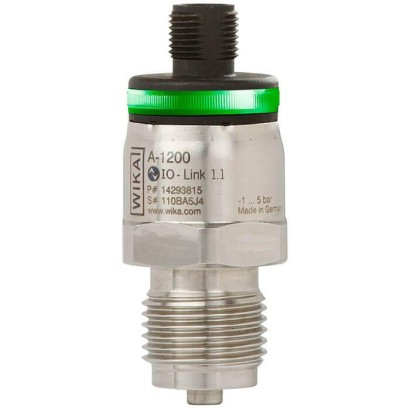
Pressure sensor with IO-Link
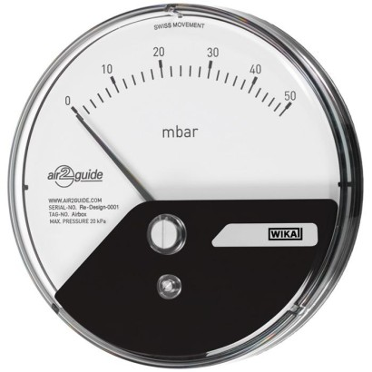
Differential pressure gauge Eco
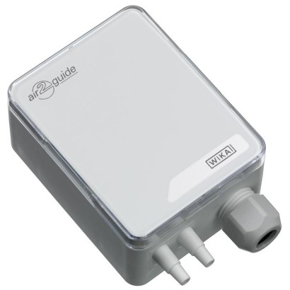
Differential pressure sensor
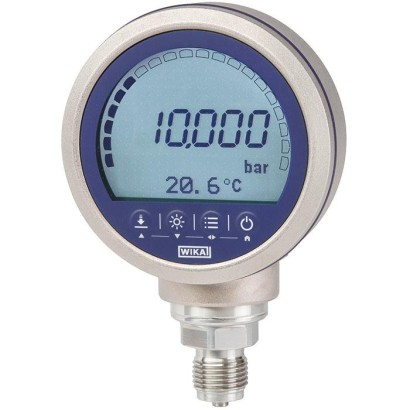
Precision digital pressure gauge
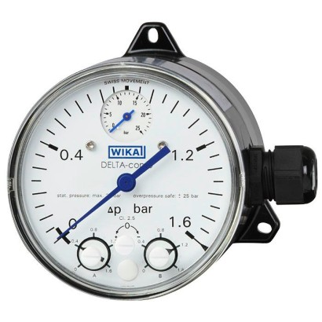
Differential pressure gauge with micro switches
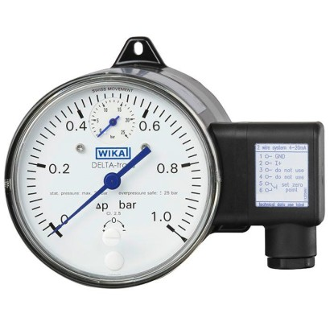
Differential pressure gauge with output signal
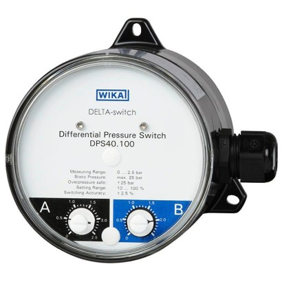
Differential pressure switch
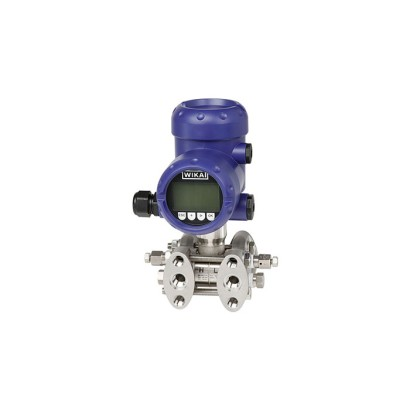
Differential pressure transmitter
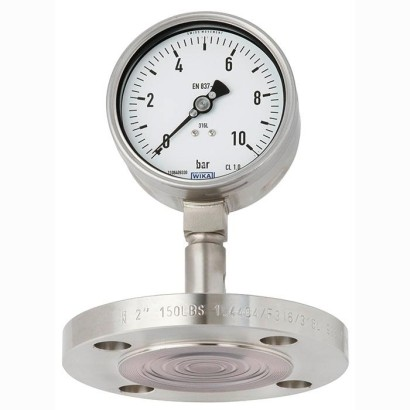
Pressure gauge per EN 837-1 with mounted diaphragm seal
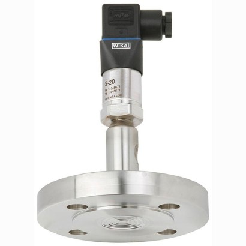
High-quality pressure sensor with mounted diaphragm seal
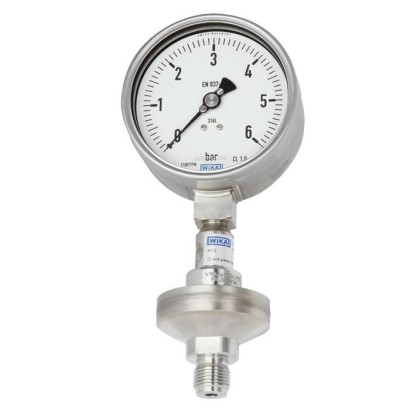
Pressure gauge per EN 837-1 with mounted diaphragm seal
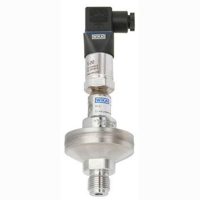
High-quality pressure sensor with mounted diaphragm seal
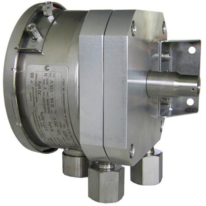
Differential pressure switch
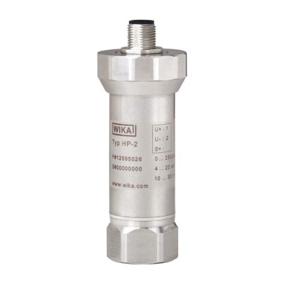
Pressure sensor HP-2
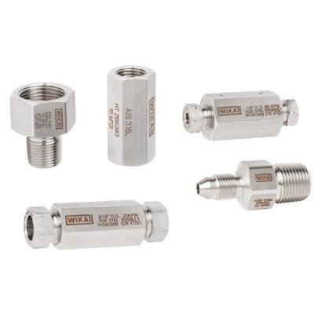
High-pressure connection adapters and couplings
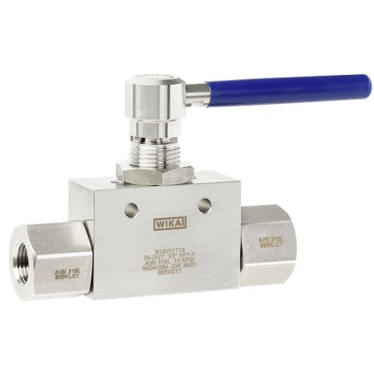
High-pressure ball valve
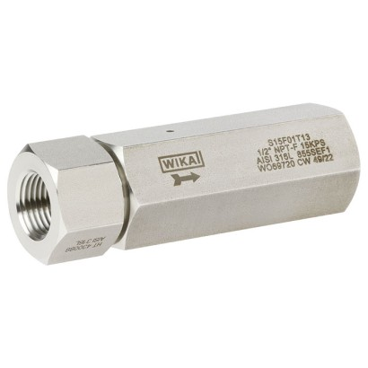
High-pressure check valve
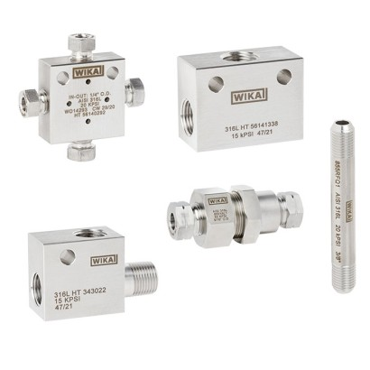
High-pressure fittings and accessories
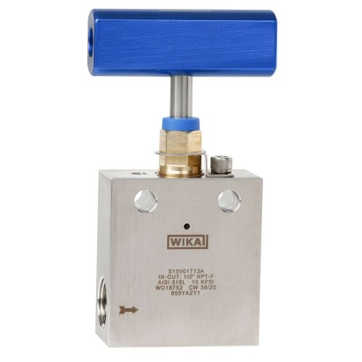
High-pressure needle valve
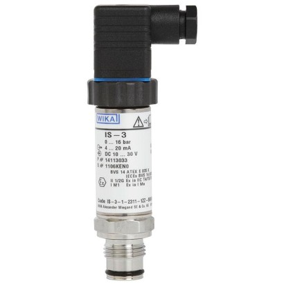
Pressure sensor IS-3

Needle valve and multiport needle valve
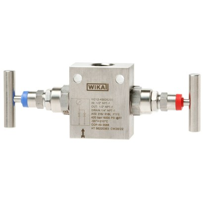
Block-and-bleed valve
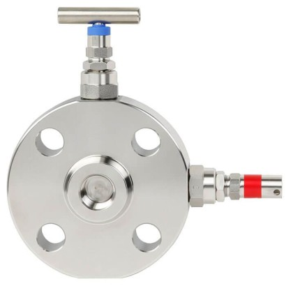
Monoflange
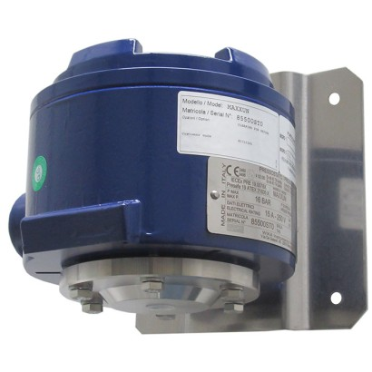
Diaphragm pressure switch, flameproof enclosure Ex d
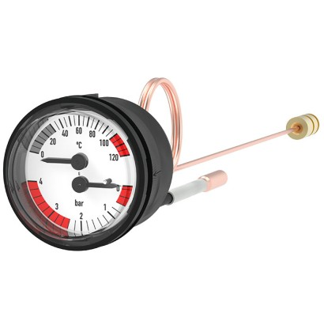
Thermomanometer
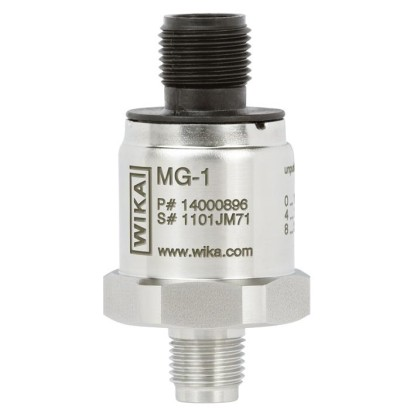
Pressure sensor MG-1
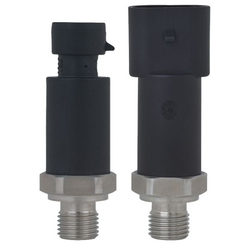
OEM pressure sensor
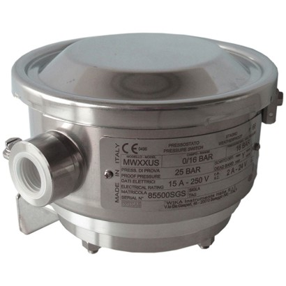
Diaphragm pressure switch
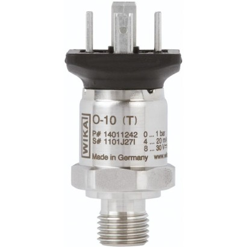
OEM pressure transmitter
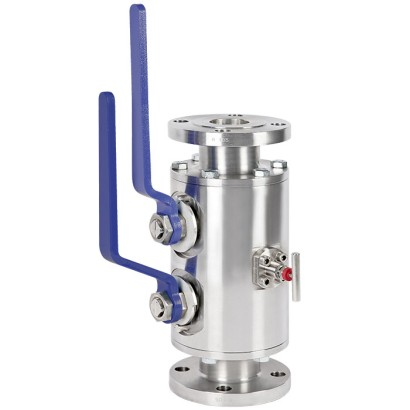
Piping ball valve, split body design
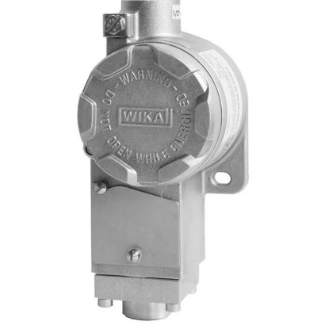
Compact pressure switch, flameproof enclosure Ex d

Compact pressure switch
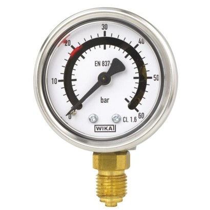
Bourdon tube pressure gauge with switch contacts
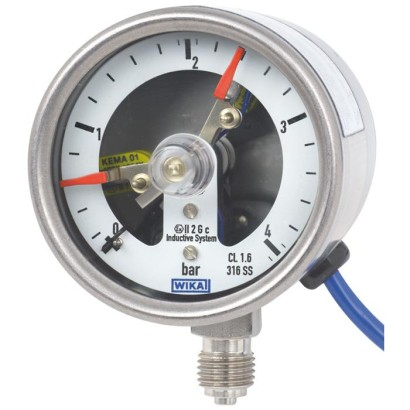
Bourdon tube pressure gauge with switch contacts
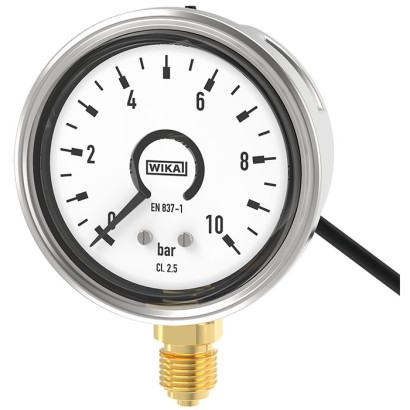
Bourdon tube pressure gauge with output signal
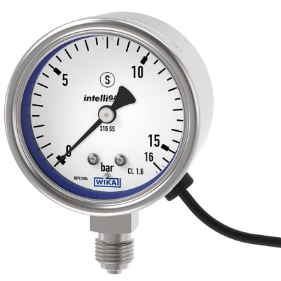
Bourdon tube pressure gauge with output signal
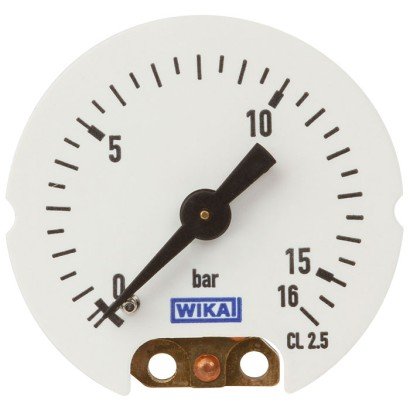
OEM pressure measuring system
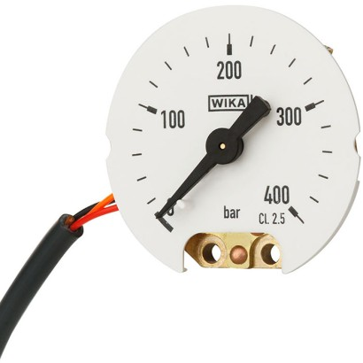
OEM pressure measuring system with output signal
OEM pressure sensor
Electronic pressure switch
OEM pressure switch with display
Pressure switch
Pressure switch, heavy-duty version
Pressure switch, high adjustability of switch differential
Compact pressure switch
Compact pressure switch
Miniature pressure switch, stainless steel
Pressure sensor R-1
Flush pressure sensor

Pressure sensor S-20
Pressure sensor SA-11
Bimetal thermomanometer Eco
Bimetal thermomanometer

Bourdon tube pressure gauge, copper alloy
Bourdon tube pressure gauge, copper alloy or stainless steel
Bourdon tube pressure gauge, stainless steel

Bourdon tube pressure gauge, stainless steel

Diaphragm pressure gauge

Absolute pressure gauge, stainless steel
Capsule pressure gauge, stainless steel
Differential pressure gauge
Differential pressure gauge
Differential pressure gauge
Process transmitter
Differential pressure switch
Pressure sensor with flameproof enclosure
Monoblock
Monoblock
Monoblock
Process transmitter
Valve manifold for differential pressure measuring instruments
Valve manifold for differential pressure measuring instruments
Pressure sensor P-30, P-31
Bourdon tube pressure gauge with switch contacts
Bourdon tube pressure gauge with electrical output signal

Bourdon tube pressure gauge with wireless transmission
Process transmitter